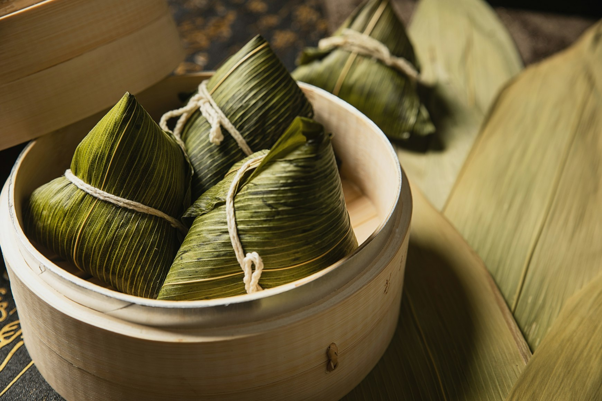
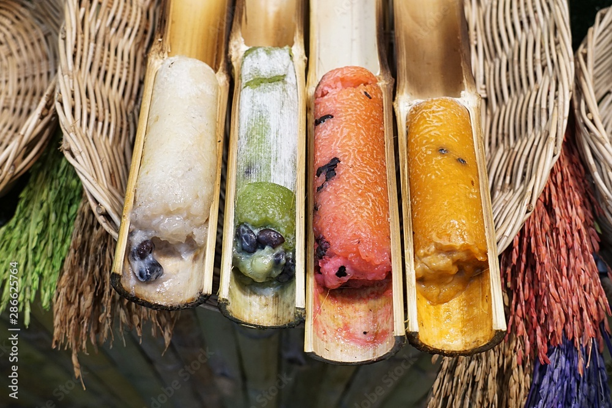
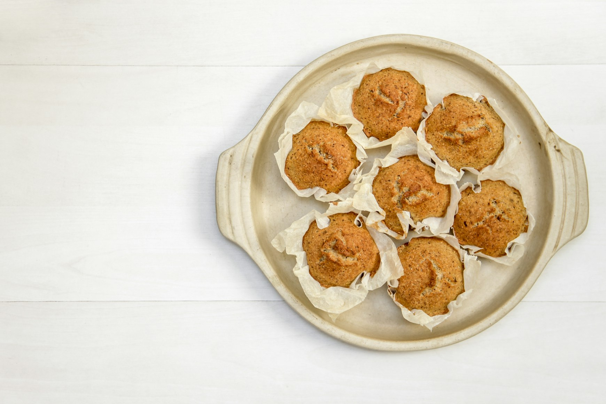
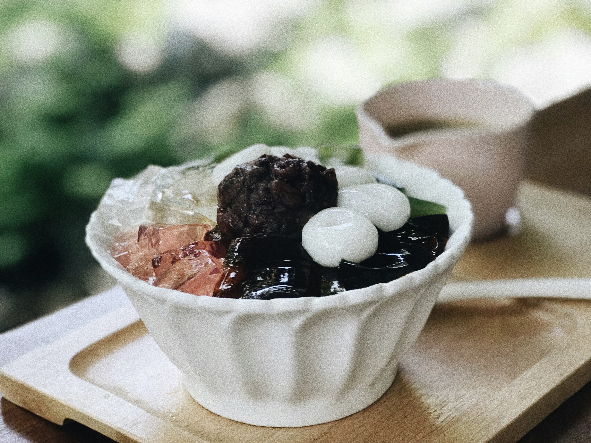
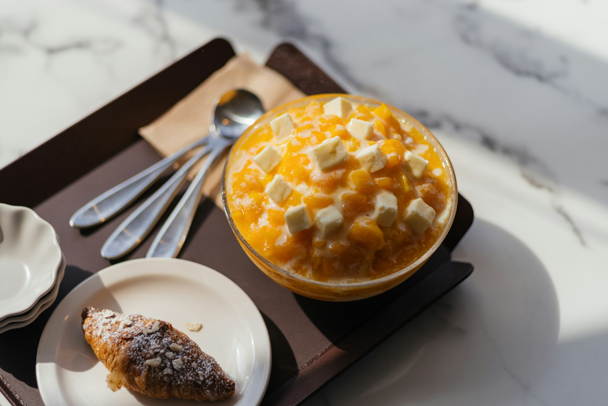
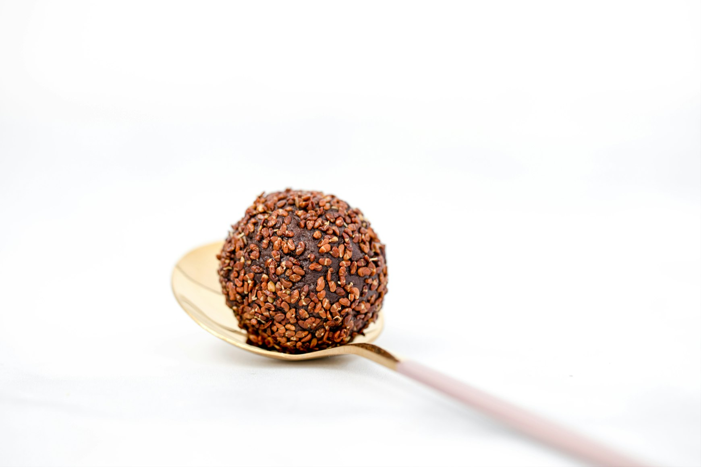

Laos has one of the least documented dessert cultures in Southeast Asia. Unlike Thailand or Vietnam, where sweets have become part of international food culture, many Lao desserts remain deeply local, seasonal, and tied to specific regions, markets, festivals, or methods of preparation that rarely survive industrialization well.
Some desserts still depend on hand-grated coconut, bamboo roasting over charcoal, banana-leaf steaming, or sticky rice varieties grown in small quantities in mountain provinces. Others disappear simply because younger generations no longer spend entire mornings preparing sweets that can now be replaced with factory-made snacks.
What makes Lao desserts fascinating is not extravagance, but technique. Many of them are built from only a few ingredients — sticky rice, coconut milk, palm sugar, sesame, banana, taro, mung beans — but transformed through labor-intensive preparation methods that create completely different textures and aromas.
Bamboo changes the flavor of rice. Banana leaves trap steam and perfume coconut fillings. Slow caramelization alters palm sugar into something smoky and mineral rather than simply sweet.
This is also why Lao desserts can initially feel unfamiliar to foreign visitors expecting bright pastries or heavily sugared cakes. Lao sweets are often subtle, lightly sweetened, textural, and closely connected to agriculture and climate. Sticky rice dominates much of the country’s cuisine, and desserts follow the same logic.
Many dishes are not uniquely Lao in a strict national sense. Several are also eaten in Thailand’s Isan region, northern Thailand, Cambodia, or parts of Vietnam. Laos shares culinary history with neighboring countries, and the borders between food cultures in mainland Southeast Asia have always been fluid.
The difference often lies in technique, local rice varieties, ratios of coconut to sugar, and how strongly traditional preparation methods survived.
The best place to experience these desserts is usually not restaurants. It is morning markets in Luang Prabang, riverside food stalls, temple festivals, neighborhood vendors, and provincial towns where recipes continue because families still cook them for themselves.
Khao Tom — Sticky Rice and Banana Steamed in Banana Leaves
Khao Tom is one of the most common traditional sweets found across Laos, although versions also exist in Thailand and Cambodia. At first glance, it can look deceptively simple: sticky rice wrapped around banana or mung bean filling, folded tightly in banana leaves, then steamed until compact and fragrant.

The preparation technique is what makes it distinctive.
Glutinous rice is first soaked for several hours so the grains soften evenly during steaming. Fresh coconut milk is often mixed into the rice before wrapping, which gives the finished dessert a richer texture and subtle sweetness. A ripe banana — usually a small, naturally sweet variety — is placed in the center, sometimes together with black beans or mung beans for additional texture.
The wrapping process matters. Vendors fold banana leaves into dense cylinders or rectangular parcels, tying them tightly with bamboo strips or string so steam cannot easily escape. During steaming, the leaves release grassy, slightly floral aromas into the rice. The outer layer absorbs moisture while the center becomes dense and sticky without turning mushy.
Good Khao Tom has several textures at once: soft banana, chewy rice, lightly oily coconut milk, and the firmer resistance of beans if they are included. It is mildly sweet rather than sugary.
In Laos, this dessert appears frequently during Buddhist festivals and temple gatherings because it travels well and can be prepared in large quantities. Morning markets in Luang Prabang often sell fresh bundles still warm from steaming baskets.
Industrial versions wrapped in plastic increasingly replace handmade ones in urban areas. The difference is immediately noticeable. Traditional Khao Tom carries aroma from real banana leaves and irregular texture from hand-prepared rice. Factory versions often become uniformly soft and overly sweet.
Khao Lam — Sticky Rice Roasted Inside Bamboo
Khao Lam is one of the most technically interesting desserts in Laos and northern Thailand. The dish uses bamboo not as serving decoration, but as cooking equipment.

Sticky rice is partially soaked and mixed with coconut milk, palm sugar or cane sugar, and sometimes black beans or taro. The mixture is poured into sections of freshly cut bamboo, which naturally retain moisture while slowly heating over charcoal fires.
The bamboo itself changes the flavor.
As the tubes roast, moisture inside the bamboo turns to steam, cooking the rice gradually from within while the exterior chars. Sugars near the opening caramelize slightly. The interior develops a faint woody aroma impossible to replicate in metal cookware.
Preparing Khao Lam properly takes time because the bamboo tubes must constantly rotate over heat to avoid burning one side while leaving the center undercooked. Vendors traditionally line rows of bamboo diagonally around charcoal pits, turning them manually for long periods.
When finished, the outer charred bamboo layer is peeled away with knives or machetes, revealing a softer inner membrane attached to the rice. The texture should be compact but moist, with distinct sticky grains rather than porridge-like softness.
Some regional Lao versions are less sweet than Thai adaptations and focus more on coconut fragrance and rice quality than sugar.
Khao Lam historically functioned both as dessert and portable travel food because the bamboo protected the rice naturally. Farmers and traders could transport it long distances before refrigeration existed.
Today, properly charcoal-roasted versions are increasingly difficult to find in cities where gas burners and shortcuts replace traditional preparation. The best examples usually appear near highways, rural markets, and provinces where bamboo remains part of daily cooking culture.
Khanom Krok — Coconut Rice Pancakes Cooked in Cast-Iron Pans
Although widely associated with Thailand, Khanom Krok is also deeply embedded in Lao street-food culture, especially in areas close to the Mekong and regions culturally connected with Isan traditions.

The dessert is made from rice batter and coconut milk cooked in heavy cast-iron pans with small round depressions resembling takoyaki molds.
The batter itself is surprisingly technical.
Rice is soaked and ground into a smooth slurry rather than using wheat flour. Coconut milk is separated into thinner and thicker portions. The lower layer forms a firmer shell while the upper coconut-rich layer stays custard-like.
When the batter hits hot cast iron, the bottom develops a crisp golden crust while the center remains soft and almost creamy. Vendors often cover the pans briefly so steam cooks the interior without drying it out.
Traditional toppings can include green onions, sweet corn, taro cubes, pumpkin, or sesame. The contrast between salty toppings and sweet coconut base is intentional.
Fresh Khanom Krok should be eaten immediately. Within minutes, the crisp outer shell softens from trapped steam. This is why the dessert works best at active street stalls where batches constantly rotate through hot pans.
The aroma around these stalls is distinctive: coconut fat caramelizing against hot metal mixed with charcoal smoke from nearby grills.
In Laos, older vendors still use charcoal beneath cast-iron molds because the heat distribution differs from gas burners. Charcoal creates slower, more even cooking that allows the bottom crust to develop gradually without scorching the coconut.
Nam Van — Lao Coconut Dessert Soup
Nam Van is less a single dessert than a category of Lao sweet soups built from coconut milk, syrup, crushed ice, fruits, jelly-like starches, beans, and brightly colored toppings.

The dessert reflects both Chinese and Southeast Asian influences and is especially popular during hot-season afternoons.
A traditional Nam Van stall often resembles a small ingredient laboratory. Bowls of jackfruit, palm seeds, tapioca pearls, grass jelly, sweet potato cubes, taro, red beans, pandan jelly, and coconut cream are arranged separately so customers can combine components individually.
Texture is central to the experience.
A proper bowl balances chewy, slippery, creamy, crunchy, and icy elements simultaneously. Palm seeds provide resistance similar to lychee. Tapioca pearls remain elastic. Coconut milk adds richness while shaved ice keeps the dessert refreshing in tropical heat.
The syrups are usually lighter than Western dessert sauces. Palm sugar contributes mineral and smoky notes rather than aggressive sweetness.
In Luang Prabang and Vientiane, Nam Van stalls become especially active in late afternoons when temperatures remain high and people gather after work or school.
The dessert also reveals how Lao sweets differ from many European traditions. Flavor intensity comes less from butter or chocolate and more from layered textures, coconut fat, pandan aroma, and temperature contrast.
Modern versions increasingly rely on artificial coloring and packaged jellies. Traditional stalls still prepare components manually, especially pandan jellies and coconut cream, which produce cleaner flavors and softer textures.
Khao Niew Moon — Coconut Sticky Rice
Sticky rice sits at the center of Lao food culture, so it naturally appears in desserts as well.

Khao Niew Moon is made by steaming glutinous rice until tender, then gradually mixing it with sweetened coconut milk while the rice remains hot. Timing matters because the grains must absorb coconut cream without collapsing into paste.
Good versions maintain grain definition while becoming glossy and slightly elastic.
The dessert is often paired with ripe mango during mango season, although seasonal fruit changes depending on region and availability. Some vendors serve it with durian, custard apple, or grilled banana.
The preparation depends heavily on rice quality. Laos produces multiple glutinous rice varieties, and experienced cooks select different types depending on whether they want firmer texture, more fragrance, or greater absorption of coconut milk.
Traditional steaming uses woven bamboo baskets positioned over boiling water rather than metal steamers. Bamboo allows excess moisture to escape gradually, helping the rice stay chewy instead of wet.
This dessert demonstrates how subtle Lao sweets can be. Sugar levels remain restrained compared to many commercial Asian desserts sold internationally. The emphasis is on coconut aroma, warm rice texture, and the slight saltiness often added to coconut cream to balance sweetness.
Khao Nom Kok — Sesame Rice Balls
Khao Nom Kok appears frequently in local markets but is rarely discussed in international Lao food guides.

These small desserts are usually made from glutinous rice flour shaped around fillings such as mung bean paste or palm sugar, then coated with sesame seeds and fried until the exterior becomes crisp.
The frying process transforms the texture dramatically.
Inside, the dough remains elastic and chewy because glutinous rice flour traps moisture efficiently. Outside, sesame seeds toast in hot oil and develop nutty bitterness that balances the sweetness of the filling.
Freshly fried versions are best eaten warm, when the contrast between crisp crust and sticky center is strongest.
In some provinces, cooks use black sesame for deeper aroma. Others combine shredded coconut into fillings. Palm sugar versions can become partially molten inside, creating a soft caramel-like center.
These desserts survive mostly through small-scale vendors because industrial production struggles to preserve texture. Once cooled for long periods, the outer layer loses crispness and the dough hardens.
As with many Lao sweets, the appeal comes less from sugar intensity and more from careful management of texture and heat.
Mung Bean Layer Cakes and Coconut Jelly Desserts
Many Lao markets sell brightly colored layered desserts made from mung bean starch, rice flour, tapioca starch, coconut milk, and pandan.
These sweets are visually striking but also technically demanding.
Each layer must partially set before the next is added. Too much heat blends the colors together. Too little heat prevents proper adhesion between layers. Skilled vendors achieve sharply separated translucent bands while maintaining soft texture.
Pandan leaves often provide the green color and aroma naturally. Coconut milk creates opaque white layers with richer mouthfeel.
The finished desserts feel soft, elastic, and slightly slippery rather than cake-like in the Western sense. Tapioca starch contributes chewiness while mung bean starch creates delicate firmness.
These desserts are increasingly vulnerable to modernization because artificial flavorings and food coloring dramatically reduce preparation time. Handmade versions using fresh pandan and slow-steamed layers require patience few commercial producers now invest in.
Still, in traditional markets across Laos, especially during festivals, older women continue producing trays of layered sweets early in the morning before temperatures rise.
Coconut, Sticky Rice, and the Future of Lao Desserts
Lao desserts survive in a fragile position between daily tradition and modernization.
Unlike highly commercialized food cultures, Laos still contains places where desserts are made because families genuinely eat them, not because tourists expect them. But that balance changes quickly. Younger urban generations increasingly consume packaged snacks, milk tea chains, and imported sweets. Labor-intensive recipes disappear when preparation takes half a day and factory desserts cost less.
At the same time, tourism sometimes simplifies Lao desserts into decorative versions designed mainly for photographs. Coconut becomes sweeter. Artificial colors replace pandan. Bamboo roasting gets shortened with gas burners. Handmade rice preparation disappears behind industrial flour mixes.
The most interesting Lao desserts remain the ones still connected to local rhythms: sticky rice steaming before dawn, banana leaves folded by hand, bamboo tubes rotating slowly over charcoal, coconut grated fresh the same morning.
These techniques are not disappearing overnight. But they are becoming rarer.
Travelers interested in food often focus on famous dishes first — laap, sticky rice, grilled river fish, noodle soups. Yet Lao desserts reveal something quieter and in many ways more intimate about the country. They show how deeply cooking remains tied to agriculture, texture, seasonality, and patience.
The best strategy is simple: visit morning markets, look for stalls with older local customers, choose desserts wrapped in banana leaves rather than plastic, and pay attention to preparation methods. If a vendor still roasts bamboo over charcoal or steams sticky rice in woven baskets, you are tasting techniques that survived generations of change.
And increasingly, those techniques are exactly what make these desserts worth traveling for.